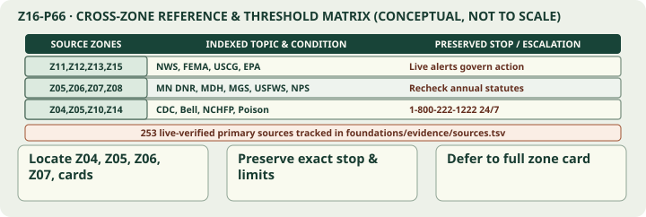

Z16-P66 · Field reference atlas · New manuscript
Governing Agency, Regulatory and Scientific Authority Index
Map each encyclopedia domain to its authoritative federal, state, university, or scientific agency so users know where to verify live updates.
When it applies · Checking current regulations, advisories, forecasts, and taxonomic records prior to fieldwork.
Equipment · Full offline reader (Z04, Z05, Z06, Z07, Z08, Z11, Z13, Z14, Z15), primary zone cards, and local emergency and agency references.

Actions
- Weather, hazards & rescue: NWS, NOAA (weather warnings, surf, ice, tsunami, Z11, Z12, Z15); FEMA, Ready.gov (disaster preparedness, Z13, Z15); USCG (boating, maritime safety, Z12); SARSAT, NOAA (406 MHz PLB registration, Z11).[A06, A09, D01, N08, X17]
- Minnesota natural resources & geology: MN DNR (fishing, hunting, trapping, CWD, AIS, parks, SNAs, wild rice, Z05–Z08); MDH (waterbody fish advisories, private wells, Z06, Z13); MGS & USGS (bedrock, topographic maps, minerals, Z08, Z11); USFWS & NPS (ESA, MBTA, 36 CFR 2.1, Z06–Z08).[A06, H01, H04, L03, R01, R08]
- Health, taxonomy & food safety: CDC, NIOSH, EPA (water, silica, asbestos, smoke, lead, botulism, Z04, Z08, Z10, Z15); Bell Museum, USDA PLANTS, ITIS & MyCoPortal (vouchers & taxonomy, Z05); USDA, NCHFP & UMN Extension (canning, gardening, food safety, Z14); Minnesota Poison Control (1-800-222-1222, Z05, Z10).[A03, A05, B01, B09, P11, R06]
Failure recognition · Relying on undated blog posts or outdated print tables instead of the governing agency misses annual hunting, fishing rule changes and active health advisories.[A06, H01]
Verify · Every domain maps cleanly to live-verified public agencies tracked in sources.tsv.[A06, A10]
Stop or change course · Stop assuming static print summaries override live agency advisories, park rules, or emergency orders.[A06, A10]
Evidence and editorial notes
- A03 · CDC · How to Make Water Safe in an Emergency (2024-09-19)
- Section: Cross-zone public-health, water, medicine, and sanitation linkage · Conditions: Indexing Z04, Z10, Z13, and Z14 hygiene, boiling, and clinical red flags
Support: Cross-referencing water treatment, wound care, cold-chain food safety, and poison escalation preserves consistent public-health thresholds across zones.
Limitations: Condensed tables never authorize skipping altitude boiling rules, chemical-source rejection, or clinician evaluation. · Conflicting evidence: None noted.
Editorial note: Prevents cross-zone public-health drift. · Specialist reviewer: Public-health reviewer
Primary source · checked 2026-11-24 - A05 · Bell Museum (UMN) · Minnesota Biodiversity Atlas (Current web edition)
- Section: Botanical and fungal cross-reference with permanent consumption HOLD · Conditions: Indexing Z05 species morphology, lookalikes, and Poison Control referrals
Support: Atlas botanical/fungal tables index accepted names, phenology, and lethal lookalikes solely for observation, hazard avoidance, and voucher documentation.
Limitations: No Z16 index entry may imply edibility or bypass Z05 multi-character and expert-review gates. · Conflicting evidence: None noted.
Editorial note: Preserves Z05 consumption HOLD inside Z16. · Specialist reviewer: Botanist and mycologist
Primary source · checked 2026-11-25 - A06 · Minnesota DNR · Minnesota Fishing Regulations (Current web edition)
- Section: Lawful harvest, trapping-hazard, and regulatory cross-reference · Conditions: Indexing Z06 harvest, Z07 trap-hazard avoidance, and agency reporting lines
Support: Regulatory quick-references always pair species/season pointers with jurisdiction, authority lookup, check date, and explicit rejection of emergency exemptions.
Limitations: Index pointers expire with annual rule cycles and require current agency verification. · Conflicting evidence: None noted.
Editorial note: Preserves Z06/Z07 legal authority bounds in Z16. · Specialist reviewer: Wildlife legal reviewer
Primary source · checked 2026-11-25 - A09 · Minnesota Poison Control System · Poison Help 1-800-222-1222 and Regional Plant/Mushroom Guidance (Current web edition)
- Section: Consolidated emergency communication, reporting, and referral directory · Conditions: Cross-zone emergency escalation across Z01, Z05, Z06, Z07, Z10, Z11, Z13, Z15
Support: Emergency lookup tables separate 911 life-threat activation, Poison Help 1-800-222-1222, utility leak/outage lines, and DNR wildlife/TIP reporting.
Limitations: Cell coverage fails in remote areas; pre-plan offline communication and backup evacuation routes. · Conflicting evidence: None noted.
Editorial note: Standardizes Z16 emergency contact index. · Specialist reviewer: EMS and emergency communications reviewer
Primary source · checked 2026-11-25 - A10 · FEMA / Ready.gov · Make a Plan (current web edition)
- Section: Offline reader navigation, historical lineage, and HOLD transparency · Conditions: Using the complete 16-zone offline archive, zone readers, and print proofs
Support: Navigation aids expose draft status, reconstruction lineage, open diagnostic photo needs, and pending specialist holds on every lookup path.
Limitations: Automated validation checks structure and citations only; publication remains HOLD until qualified human review completes. · Conflicting evidence: None noted.
Editorial note: Anchors Z16 offline navigation & governance index. · Specialist reviewer: Accessibility, print QA, and editorial reviewer
Primary source · checked 2026-11-24 - B01 · Bell Museum (UMN) · Minnesota Biodiversity Atlas (Current web edition)
- Section: Minnesota Biodiversity Atlas regional occurrence and specimen data · Conditions: Documenting regional plant and fungal distribution in Minnesota
Support: Regional atlas records establish verified county-level occurrences and phenology windows for Minnesota plants and fungi.
Limitations: Occurrence maps confirm regional presence only; they never confirm a field specimen identity or consumption suitability. · Conflicting evidence: None noted.
Editorial note: Anchors Z05 Minnesota regional taxonomy. · Specialist reviewer: Bell Museum / regional botanist
Primary source · checked 2026-11-25 - B09 · Minnesota Poison Control System · Poison Help 1-800-222-1222 and Regional Plant/Mushroom Guidance (Current web edition)
- Section: Minnesota Poison Control 1-800-222-1222 immediate referral · Conditions: Any suspected toxic plant, berry, root, or mushroom ingestion or severe dermal exposure
Support: Call 1-800-222-1222 immediately (or 911 for breathing difficulty, collapse, seizures, or altered alertness); do not wait for delayed symptoms.
Limitations: Never induce vomiting or administer home remedies unless explicitly instructed by Poison Control or EMS. · Conflicting evidence: None noted.
Editorial note: Mandatory Z05 poison-response escalation. · Specialist reviewer: Clinical toxicologist / Poison Center
Primary source · checked 2026-11-25 - D01 · FEMA / Ready.gov · Be Informed and Multi-Hazard Preparedness (current web edition)
- Section: Be Informed > Local Hazard Assessment, Alerts, and Jurisdiction Mapping · Conditions: Households preparing for regional multi-hazard emergencies
Support: Identify specific local hazards, sign up for county/municipal opt-in alerts alongside WEA/EAS and NOAA Weather Radio, know official evacuation zone labels, and review household plans twice yearly.
Limitations: Emergency warning systems, siren policies, and shelter locations vary strictly by county and municipality. · Conflicting evidence: None; aligns with T14 and T15.
Editorial note: Establishes jurisdiction-specific alert and planning baseline in Z15. · Specialist reviewer: Emergency management specialist
Primary source · checked 2026-11-24 - H01 · Minnesota DNR · Minnesota Fishing Regulations (Current web edition)
- Section: Licensing, seasons, limits, and waterbody-specific rules · Conditions: Minnesota angling across inland, border, and designated waters
Support: Anglers must hold a valid license unless explicitly exempt and verify current season dates, possession limits, size slots, and special waterbody rules before fishing.
Limitations: Regulations change annually and differ on border waters, trout streams, and tribal/ceded territories; no emergency creates an automatic legal exemption. · Conflicting evidence: None noted.
Editorial note: Establishes Z06 fishing authority gate. · Specialist reviewer: Minnesota DNR fisheries and legal reviewer
Primary source · checked 2026-11-25 - H04 · Minnesota Dept. of Health · Fish Consumption Guidance and Waterbody Advisories (Current web edition)
- Section: Waterbody-specific fish consumption advisories (mercury, PFAS, PCBs) · Conditions: Consuming Minnesota caught freshwater fish
Support: MDH issues species-, size-, and waterbody-specific meal-frequency limits for mercury, PCBs, and PFAS, with stricter limits for pregnant/nursing people and children under 15.
Limitations: Visual fish health and water clarity cannot detect mercury, PFAS, or PCBs; check current MDH waterbody lookup before eating caught fish. · Conflicting evidence: None noted.
Editorial note: Mandatory Z06 public-health fish advisory gate. · Specialist reviewer: Public-health toxicologist and MDH reviewer
Primary source · checked 2026-11-25 - L03 · U.S. Fish & Wildlife Service · Endangered Species Act Protections and Take Prohibitions (Current web edition)
- Section: Endangered Species Act strict take prohibitions · Conditions: Federal threatened and endangered species habitats (e.g., Canada lynx)
Support: Incidental or intentional capture, injury, or harassment of federally listed species violates the Endangered Species Act and triggers strict reporting and gear restrictions.
Limitations: Trapping zones near lynx or listed-species ranges carry additional federal/state exclusion rules. · Conflicting evidence: None noted.
Editorial note: Enforces ESA species protection in Z07. · Specialist reviewer: Federal wildlife legal reviewer
Primary source · checked 2026-11-25 - N08 · NOAA NCEI · Magnetic Declination (current web edition)
- Section: NOAA Magnetic Declination > definition and true-bearing conversion · Conditions: Using magnetic baseplate compasses near metal, electronics or iron-rich rock
Support: Declination is between true and magnetic north and varies by location and time. Grid convergence is separate. A device may already apply a correction.
Limitations: NOAA definition does not establish site-specific interference distances or diagnosis of magnetic anomalies. · Conflicting evidence: Aligns with B014-P13 and B014-P14.
Editorial note: Grounds declination conversion, metal-clearance and magnetic-anomaly cards. · Specialist reviewer: Navigation and geophysics safety
Primary source · checked 2026-11-24 - P11 · NCHFP · Drying Foods Safely (current web edition)
- Section: Drying Foods > Pretreatment, Temperature Control, Airflow, and Conditioning · Conditions: Electric dehydrators, controlled low ovens, or approved solar dryers for fruits, herbs, vegetables, and jerky
Support: Control temperature, low humidity, and continuous airflow simultaneously to remove moisture before spoilage occurs; blanch vegetables where directed, heat meat to safe internal temperatures per NCHFP jerky guidelines, and condition dried fruits to equalize residual moisture before airtight storage.
Limitations: Case-hardening (too hot early) traps wet interiors that mold in storage; open-air outdoor drying fails in humid climates like Upper Midwest summers. · Conflicting evidence: None; separates safe controlled dehydration from high-risk raw-meat drying.
Editorial note: Grounds dehydration equipment, jerky safety, and moisture-equilibrium checks. · Specialist reviewer: Food preservation and food safety specialist
Primary source · checked 2026-11-24 - R01 · Minnesota Geological Survey (UMN) · Minnesota Geological Survey Maps and Regional Geology (Current web edition)
- Section: Geologic provinces and bedrock mapping · Conditions: Minnesota and Upper Midwest regional bedrock/glacial terrain
Support: Minnesota spans Precambrian Canadian Shield igneous/metamorphic rock, Midcontinent Rift volcanics, Paleozoic sedimentary strata, and Pleistocene glacial drift.
Limitations: Surficial glacial till frequently conceals underlying bedrock; local geologic maps and field verification remain necessary. · Conflicting evidence: Generalized state maps do not confirm outcrop-scale rock composition.
Editorial note: Bounds Z08 regional geology framing. · Specialist reviewer: Geologist and regional survey reviewer
Primary source · checked 2026-11-25 - R06 · NIOSH / CDC · Crystalline Silica Respiratory Dust Hazards (2024)
- Section: Crystalline silica dust respiratory hazard · Conditions: Any grinding, hammering, knapping, or crushing of quartz, chert, sandstone, or granite
Support: Fracturing or abrading silica-bearing stone generates respirable crystalline silica dust linked to silicosis and lung disease.
Limitations: Outdoor breeze does not eliminate breathing-zone dust; avoid dry grinding/crushing and use eye and respiratory protection in authorized instruction. · Conflicting evidence: None noted.
Editorial note: Mandatory Z08 silica/eye safety gate. · Specialist reviewer: Industrial hygienist and geologist
Primary source · checked 2026-11-25 - R08 · National Park Service / eCFR · 36 CFR 2.1 Preservation of Natural, Cultural and Archeological Resources (Current CFR)
- Section: 36 CFR 2.1 natural resource collecting prohibitions · Conditions: National Parks, Monuments, and federal recreation areas
Support: Collecting rocks, minerals, fossils, wood, or natural specimens is prohibited on National Park System lands unless specifically authorized.
Limitations: Rules vary across USFS, BLM, state, tribal, county, and private lands; check the governing land manager before taking any sample. · Conflicting evidence: None noted.
Editorial note: Prevents unlawful federal resource extraction. · Specialist reviewer: Public-lands resource manager
Primary source · checked 2026-11-25 - X17 · NWS · Hurricane Safety (current web edition)
- Section: Hurricane Safety > Storm Surge, Coastal Flooding and Inland Wind · Conditions: Tropical storms and hurricanes impacting coastal and near-coastal zones
Support: Storm surge and inland rainfall flooding are the deadliest hurricane hazards; obey coastal evacuation orders early, never shelter in low coastal zones or boats and treat calm storm eyes as temporary pauses before violent winds reverse.
Limitations: Hazardous rip currents and swell arrive hundreds of miles ahead of landfall. · Conflicting evidence: None; aligns with READY-EVAC and T13.
Editorial note: Grounds coastal storm-surge and hurricane evacuation cards in Z12. · Specialist reviewer: Emergency management and marine meteorology
Primary source · checked 2026-11-24
Source lineage · New manuscript (Z16 P20 authority index) · Classification · New manuscript.